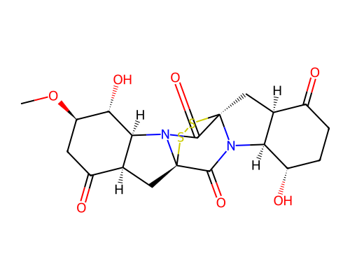
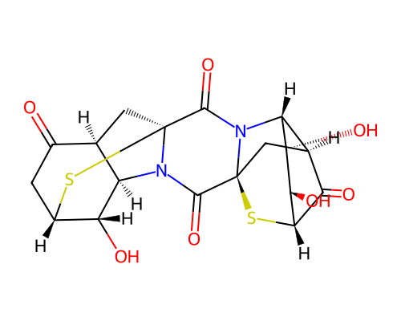

Recorded genus · Epicoccum
Follow source profiles to their compounds, recorded activities and original evidence.
Sources / Fungi / Recorded genus
Classification follows stored source-name assignments; original identification and evidence states are retained. Activity counts cover associated compounds and do not establish taxon-specific activity.
Browse these source cardsConnection network
Click a node to expand its connections. Drag nodes to arrange the view.
Epicoccum
Only the current neighbourhood is shown. Search or use Next to find other nodes. Shared products have one node and multiple source links. Mixed recorded source labels can occur under more than one genus.
Browse the same connections as lists
1 Recorded genus
2 Source / strain
Select a genus
Sources in this classification appear here.
3 Products
Select a source
See the products and their stored structures.
Select a product to view recorded activity, experimental systems and original evidence.
Lines show stored associations. Node distance does not represent similarity or evidence strength. Product activities are compound-level records; they are not automatically attributable to the selected strain or taxon. Target annotations do not establish direct binding. Original review states and restrictions are retained.
Source profiles
| Source / strain | Recorded genus | Compounds | Source evidence records |
|---|---|---|---|
| Epicoccum nigrum | Epicoccum | 1 | 1 restricted |
| Epicoccum nigrum LJJ028 | Epicoccum | 1 | 1 checked |
| Epicoccum nigrum SD-388 | Epicoccum | 7 | 7 checked |
| Epicoccum nigrum · XZC04-CS-302 | Epicoccum | 2 | 2 checked |
Associated compounds
| Structure | Compound | Formula | Classification | Activity records | Admitted evidence rows |
|---|---|---|---|---|---|
 Structure image unavailable Structure image unavailable | 5'-hydroxy-6'-ene-epicoccin GConnections → | C20H26N2O6S2 | Alkaloid | 5 | 1 |
 Structure image unavailable | 7'-demethoxyrostratin CConnections → | C19H22N2O7S2 | Alkaloid-Peptide | 2 | 2 |
 Structure image unavailable Structure image unavailable | 7-methoxy-7'-hydroxyepicoccin GConnections → | C21H28N2O8S2 | Alkaloid | 1 | 1 |
 Structure image unavailable Structure image unavailable | 8'-acetoxyepicoccin DConnections → | C20H20N2O7S2 | Alkaloid-Peptide | 1 | 1 |
 Structure image unavailable | Epicoccin EConnections → | C18H18N2O7S2 | Alkaloid-Peptide | 3 | 2 |
 Structure image unavailable Structure image unavailable | Epicoccin GConnections → | C20H26N2O6S2 | Alkaloid-Peptide | 6 | 5 |
 Structure image unavailable Structure image unavailable | Epicoccin OConnections → | C19H22N2O6S2 | Alkaloid-Peptide | 1 | 0 |
 Structure image unavailable Structure image unavailable | Rostratin CConnections → | C20H24N2O8S2 | Alkaloid-Peptide | 2 | 2 |
Product activities & evidence
Up to two results per compound are shown. Open the compound record for all results, conditions and restrictions.
Preview selection
Shared cited references are prioritized where available. A shared reference does not establish a strain-specific assay or the same experimental sample.
| Product | Recorded results | Result evidence |
|---|---|---|
| 5'-hydroxy-6'-ene-epicoccin G | Huh7.5 cell_viability; Not evidence for IC50>20 or complete absence of activity. Evidence detailsPrimary result checkedShared cited reference; experimental attribution unconfirmed HL-60 Numerical value withheld; the original record is retained in the audit. Evidence restriction retained Reference context unlinked No literature link recorded | DOI 10.3390/md18030160 ↗ · PubMed 32183021 ↗ No literature link recorded |
| 7'-demethoxyrostratin C | Huh7.5 IC50 = 9.52 μM Evidence detailsPrimary result checkedShared cited reference; experimental attribution unconfirmed LO2 cell_viability; Do not claim tumor selectivity; no numeric normal-cell IC50 reported. Evidence detailsPrimary result checkedShared cited reference; experimental attribution unconfirmed | |
| 7-methoxy-7'-hydroxyepicoccin G | Huh7.5 cell_viability; Not evidence for IC50>20 or complete absence of activity. Evidence detailsPrimary result checkedShared cited reference; experimental attribution unconfirmed | |
| 8'-acetoxyepicoccin D | Huh7.5 cell_viability; Not evidence for IC50>20 or complete absence of activity. Evidence detailsPrimary result checkedShared cited reference; experimental attribution unconfirmed | |
| Epicoccin E | HIV-1 replication in C8166 qualitative · 本文纳入测试，未单列1号数值；3号EC50不可转给1号 Evidence detailsPrimary result checkedShared cited reference; experimental attribution unconfirmed Huh7.5 cell_viability; Not evidence for IC50>20 or complete absence of activity. Evidence detailsPrimary result checkedShared cited reference; experimental attribution unconfirmed | |
| Epicoccin G | C8166 cytotoxicity CC50 > 100 μM (C8166 cytotoxicity) Evidence detailsPrimary result checkedShared cited reference; experimental attribution unconfirmed HIV-1 replication in C8166 EC50 = 13.5 μM (HIV-1 replication in C8166) Evidence detailsPrimary result checkedShared cited reference; experimental attribution unconfirmed | |
| Epicoccin O | Human immunodeficiency virus Numerical value withheld; the original record is retained in the audit. Evidence restriction retained Reference context unlinked No literature link recorded | No literature link recorded |
| Rostratin C | HCT-116 IC50 = 0.76 μg/mL (原文并列报告 1.6 μM；同一实验) Evidence detailsPrimary result checkedOther cited reference for this compound HCT-116 human colon carcinoma IC50 = 0.76 μg/mL（原文并列报告1.6 μM；同一实验，不重复计数） Evidence detailsPrimary result checkedOther cited reference for this compound |
No records match this search.